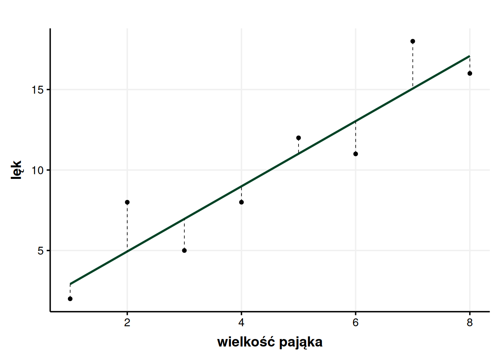
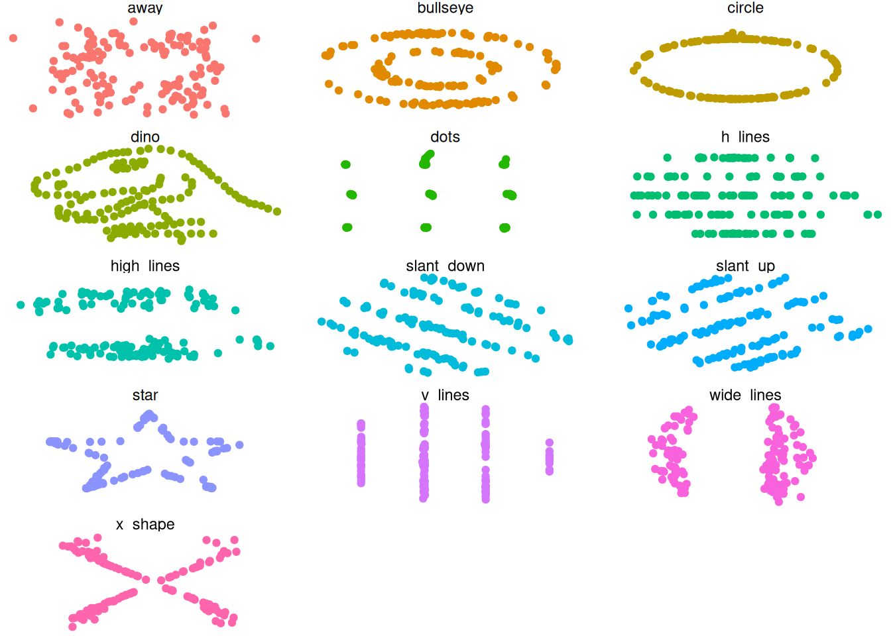
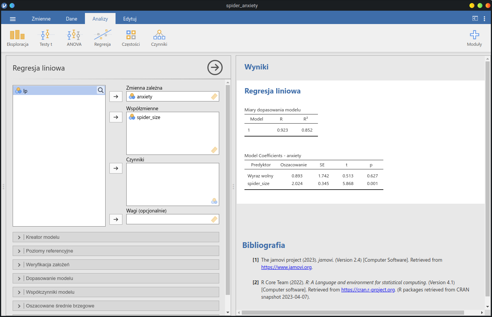

| wielkość pająka | lęk |
|---|---|
| 1 | 2 |
| 2 | 8 |
| 3 | 5 |
| 4 | 8 |
| 5 | 12 |
| 6 | 11 |
| 7 | 18 |
| 8 | 16 |
Regresja, matka wszystkich analiz
Statystyka
W Dhammapadzie czytamy „Nad tysiąc zbędnych słów jest jedno trafne słowo, które słysząc, osiąga się spokój” (Dhp. 100, tłum. Piotr Jagodziński). Sądzę, że słowem, które Budda miał na myśli, była regresja. Freudowsko regresja może nam się kojarzyć jako cofanie się w rozwoju. Rzeczywiście samo słowo możemy przetłumaczyć jako „krok do tyłu” i jak raz można powiedzieć, że to dobrze, że się cofamy.
Prawie wszystko w statystyce jest odmianą regresji. Funkcjonuje ona jako osobna analiza, ale logika, która za nią stoi, jest uniwersalna. Na przykład testy t, używane jako przykład we wpisie o wartości \(p\), można przedstawić jako rodzaj regresji. Bardziej złożona analiza wariancji (ANOVA) to też logika regresji zastosowana do pewnych szczególnych przypadków. Jeśli dobrze zrozumie się regresję, statystyka staje się znacznie przyjaźniejszym miejscem.
Żeby jednak dobrze zrozumieć regresję, trzeba mieć pewne podstawy. Dużą część z tych podstaw rozpisałem we wpisie o wariancji. Zakładam więc, że osoba czytająca wie, co to jest wariancja, reszty, odchylenie standardowe i potrafi zinterpretować wyniki testu F. Jeśli nie, dobrze odświeżyć sobie ten wpis. Zakładam też, że osoba czytająca jest na ty ze wzorem ogólnym funkcji liniowej \(y = ax + b\), wie, jak współczynnik kierunkowy i wyraz wolny wpływają na funkcję liniową oraz czym się różnią argumenty od wartości. Jeśli coś kołacze w oddali, ale nie ma pewności, polecam wpis o funkcjach.
1 Cel
Regresja to szczególny rodzaj modelu, gdzie bierzemy jakieś zmienne ilościowe i patrzymy, jak są ze sobą powiązane. Przykładem może być związek wielkości pająka z lękiem, jaki wywołuje, czyli to, co liczyliśmy we wpisie o wariancji.

Wykres ujawnia nam, że im większy pająk, tym większy lęk wywołuje. Widać to zarówno na oko, jak i po dodaniu linii regresji. Jednocześnie ciągle istnieją jakieś odchylenia od modelu, nie udało nam się wyjaśnić całości wariancji lęku. Może wynika to z takiej, a nie innej próbki. Może poza wielkością niektóre pająki były włochate, albo grube albo miały wyraźne szczękoczułki, albo przeciwne, były chude, z niewielkim rozstawem odnóży, płaciły podatki i chodziły w niedzielę do kościoła. Jak jednak wiemy z wpisu o wariancji, sama wielkość pająka pozwala nam wyjaśnić około \(R^2 = 85\%\) wariancji lęku.
To, czego jednak do tej pory nie robiliśmy, to nie wyrażaliśmy związku wielkości pająka z lękiem ilościowo. Owszem, powiedzieliśmy, że jedno i drugie wspólnie rośnie, ale tylko tyle. Ale jak bardzo rośnie? Innymi słowy, jak zacznę tego pająka powiększać Amplifikatorem Koszmarów©, i powiększę go o 2 cm, to o ile wzrośnie wywoływany przez niego lęk? Do ilościowego wyrażania związków między zmiennymi służy właśnie analiza regresji.
2 Linia regresji jako funkcja
Linia regresji, poza tym, że jest linią na wykresie, jest też pewną określoną funkcją. Osoby, które czytały wpis o funkcjach mogą skojarzyć tutaj rozróżnienie między opisem graficznym i algebraicznym. Jak każda funkcja, regresja przyjmuje jakąś liczbę, mieli ją i wypluwa odpowiedni wynik. Jak każda funkcja liniowa, linia regresji musi dać się przedstawić w postaci \(y = ax + b\).
Żeby to, co mówię, było bardziej namacalne, spójrzmy na rzeczywisty wynik analizy regresji, jaki możemy spotkać robiąc ją w R.
Call:
lm(formula = anxiety ~ spider_size, data = sp_tib)
Residuals:
Min 1Q Median 3Q Max
-2.0357 -1.3036 -0.9524 1.4762 3.0595
Coefficients:
Estimate Std. Error t value Pr(>|t|)
(Intercept) 0.8929 1.7416 0.513 0.62651
spider_size 2.0238 0.3449 5.868 0.00108 **
---
Signif. codes: 0 '***' 0.001 '**' 0.01 '*' 0.05 '.' 0.1 ' ' 1
Residual standard error: 2.235 on 6 degrees of freedom
Multiple R-squared: 0.8516, Adjusted R-squared: 0.8269
F-statistic: 34.43 on 1 and 6 DF, p-value: 0.001084Albo w nieco przemodelowanej pakietem broom postaci.
| term | estimate | std.error | statistic | p.value |
|---|---|---|---|---|
| (Intercept) | 0.893 | 1.742 | 0.513 | 0.627 |
| spider_size | 2.024 | 0.345 | 5.868 | 0.001 |
Pierwszy widok dostarcza nam bardzo dużo informacji, drugi ogranicza się do tych najistotniejszych w tej chwili. To, co nas w tej chwili interesuje, to współczynniki regresji (regression coefficients). Zarówno w pierwszym widoku, jak i w tabelce znajdziemy je w kolumnie estimate.
Zbierzmy to teraz do kupy. Regresja pozwala nam zrobić krok do tyłu w tym sensie, że dzięki niej możemy się „pozbyć” jednej zmiennej, a właściwie wyrazić daną zmienną jako funkcję innej zmiennej. Mówiąc bardziej po ludzku, tworzę taką funkcję, co jak do niej wrzucę wielkość pająka, to ona wypluje mi lęk, jaki ten pająk wywołuje (w określonych granicach błędu). Technicznie przestaję wtedy potrzebować osobnej kolumny na lęk, bo mogę go sobie policzyć z wielkości pająka. Oczywiście nikt tego nie robi, bo właściwie nie ma modeli wyjaśniających 100% wariancji (a przynajmniej nie w psychologii). Regresja polega tu na tym, że jeżeli lęk wynika z wielkości pająka, to porzucam pochodny lęk i cofam się do bardziej pierwotnej wielkości pająka.
2.1 Współczynniki
Podstawowy model regresji to funkcja liniowa. Do potencjalnych problemów z tym związanych wrócimy jeszcze w tym wpisie. O funkcjach liniowych wiemy, że dają się wyrazić jako \(y = ax + b\) a w tym wypadku chciałoby się napisać \(lęk = a \times wielkość + b\), bo z wielkości pająka chcemy wyliczyć lęk. I to da się zrobić. Musimy tylko wiedzieć, jakie liczby będą stanowiły nasz współczynnik kierunkowy \(a\) i wyraz wolny \(b\). Umówmy się, że lęk będziemy oznaczać literką \(l\), a wielkość literką \(w\), także nasza funkcja otrzymuje postać \(l(w) = aw + b\).
| term | estimate | std.error | statistic | p.value |
|---|---|---|---|---|
| (Intercept) | 0.893 | 1.742 | 0.513 | 0.627 |
| spider_size | 2.024 | 0.345 | 5.868 | 0.001 |
2.1.1 Wyraz wolny (intercept)
Zacznijmy od wyrazu wolnego. Wyraz wolny, jak powiedzieliśmy sobie we wpisie o funkcjach, zawsze ma wartość \(l(0)\). Zakładając, że nasza wielkość jest w centymetrach, jesteśmy w bardzo wygodnej sytuacji, że nie istnieje wielkość ujemna. Podobnie nie istnieje pająk o zerowej wielkości. Jak więc interpretować \(l(0)\)? Pająk o zerowej wielkości brzmi jak coś, co może wywoływać lęk wyłącznie w filozofach. Pająk o zerowej wielkości nie istnieje naprawdę1, ale możemy go potraktować jako pewną bazową wartość, lęk wywoływany przez każdego pająka niezależnie od wielkości. Nasz punkt startowy lęku. Znajdziemy go w wierszu zatytułowanym intercept, czyli właśnie wyraz wolny2. Wiemy więc, że w naszym modelu \(b = 0,893\).
2.1.2 Jednostki
Teraz mogą się pojawić pytania o to, co oznacza sama ta liczba, w jakiej jest skali. Odpowiedź brzmi – w takiej skali, w jakiej mierzyliśmy lęk. W naszym przypadku jest to skala kwestionariuszowa od 0 do 20 i bazowy lęk wynosi w zaokrągleniu 0,9. Jeśli mierzylibyśmy lęk jako reakcję skórno-galwaniczną, to wyraz wolny byłby w EDR. Jeśli lęk mierzylibyśmy rozszerzaniem źrenic, to współczynnik \(b\) byłby w milimetrach. Ostatecznie wynik będzie w takiej jednostce, jakiej sami używaliśmy.
Ma to sens, jak pomyślimy, że mamy wzór \(l(w) = aw + b\). Skoro więc \(l(w)\) ma wyjść w jednostkach pomiarowych, to zarówno \(aw\), jak i \(b\) w tych jednostkach muszą się ostatecznie wyrazić. Jeśli chcielibyśmy dostać wynik w kilogramach, to musimy dodawać kilogramy, jeśli chcemy wynik w metrach, to metry, a jeżeli chcemy wynik w kwestionariuszowym natężeniu lęku, to musimy dodawać wartości kwestionariuszowego natężenia lęku.
Jak pokażę później, czasem jednostka typu wynik w kwestionariuszu jest trudna do interpretacji. Dlatego czasem będziemy używać wartości standaryzowanych, które zinterpretować jest już dość łatwo.
2.1.3 Nachylenie
Jak można się domyślić, nachylenie, czyli współczynnik kierunkowy \(a\), da się odczytać z tabeli i wynosi tutaj w zaokrągleniu \(a = 2\). Możemy więc podstawić je do wzoru i otrzymujemy gotowy wzór na lęk – \(l(w) = 2w + 0,9\) (wartości zaokrąglone).
Większy problem, niż odczytanie, stanowi interpretacja. Z informacji, które podawałem we wpisie o funkcjach, da się wywnioskować tylko tyle, że jest to funkcja rosnąca, bo \(a > 0\). Tutaj jednak musimy trochę dołożyć to tego obrazu. Podstawmy do wzoru kolejne liczby.
\[ y = 2 \times 1 + 0,9 = 2,9 \]
\[ y = 2 \times 2 + 0,9 = 4,9 \]
\[ y = 2 \times 3 + 0,9 = 6,9 \]
Porównując kolejne wyniki możemy zobaczyć pewną prawidłowość – gdy \(w\) rośnie o 1, to lęk rośnie o 2. Ma to sens, bo w pierwszym równaniu mamy jedną dwójkę, w drugim dwie dwójki, a w trzecim trzy dwójki. Dodając 1 do \(w\) tak naprawdę dodaję kolejną dwójkę.
Wniosek z tego pozwala nam spojrzeć inaczej na wartość współczynnika kierunkowego:
Ważne
Współczynnik kierunkowy mówi o tym, o ile zmieni się wartość funkcji (lęk), gdy wartość argumentu (wielkość pająka) wzrośnie o 1.
Tutaj możemy powiedzieć, że każdy centymetr pająka zwiększa lęk o 2 jednostki. Interpretowanie nachylenia w ten sposób jest nieintuicyjne, dlatego poświęć chwilę na upewnienie się, że wiesz, dlaczego wzrost \(w\) o 1 przełoży się na wzrost lęku o \(2\) na podstawie przykładowych obliczeń powyżej. Moja podpowiedź jest taka, że warto się cofnąć do wczesnych lat podstawówki3 i przypomnieć sobie, jak mnożenie zapisywaliśmy jako wielokrotne dodawanie: \(2 \times 3 = 2 + 2 + 2\), \(2 \times 4 = 2 + 2 + 2 + 2\) itd.
Nachylenie, jego zmiany i interpretacja są tak ważne w algebrze, że w pewnym momencie napiszę cały post (lub nawet kilka) tylko na ten temat.
2.1.4 Istotność statystyczna
Poza samą wartością współczynnika możesz zauważyć, że w tabeli występują też inne informacje, w tym wartość \(p\) dla każdego współczynnika. Jeśli nie wiesz, jak działa wartość \(p\), zachęcam do nadrobienia wpisu o istotności statystycznej. Jak tę wartość interpretować?
Korzystając ze skrótu myślowego, jest to swoista pewność, czy dana wartość jest różna od 0. Mówiąc dokładniej, jak trudno byłoby uzyskać taką wartość przez przypadek. Zerknijmy na wartości \(p\) w naszym modelu.
| term | p.value | p.value.signif |
|---|---|---|
| (Intercept) | 0.627 | ns |
| spider_size | 0.001 | ** |
Jak widzimy, wyraz wolny jest tu nieistotny, zaś wielkość pająka jest istotna. Oznacza to, że owszem, wyszło nam, że „bazowy” lęk wywoływany przez pająki wynosi 0,9, ale równie dobrze to mógł być przypadek. W rzeczywistości „bazowy” lęk może wynosić 0 i nie jesteśmy w stanie tego tutaj rozsądzić. Na szczęście dla wyrazu wolnego nie ma to większego znaczenia. Ważniejsze jest dla nas to, że wielkość pająka istotnie przewiduje wywoływany przez niego lęk (\(p = 0,001\)). Oznacza to, że mamy wystarczającą dozę pewności, żeby powiedzieć, że wielkość pająka naprawdę ma związek z wywoływanym przez niego lękiem.
Gorzej jest, gdy dany predyktor (fancy nazwa na zmienną niezależną) okazuje się być nieistotny statystycznie. Może to oznaczać, że albo rzeczywiście nie ma wpływu, albo ma wpływ mniejszy, niż nasza próbka pozwalała nam wykryć. Jeśli mieliśmy wystarczająco dużą próbkę, to możemy powiedzieć, że dany czynnik nie ma wpływu albo chociaż praktycznego znaczenia. Jaka próbka jest „wystarczająco duża” to pytanie, na które odpowiada analiza mocy, która zasługuje na osobny wpis.
2.2 Przewidywanie lęku
Analiza regresji, której wyniki pokazałem wyżej, pozwoliła nam ustalić prosty wzór, za pomocą którego możemy przewidzieć, jaki pająk wywoła jaki lęk. Zapiszmy go wyśrodkowanego, będzie bardziej uroczyście.
\[ l(w) = 2w + 0,9 \]
Jak już robiliśmy to wcześniej, żeby przewidzieć z tego modelu natężenie lęku, wystarczy podstawić za \(w\) wielkość pająka. I w ten sposób np. \(l(6) = 2 \times 6 + 0,9 = 12,9\). Spojrzenie w tabelę pozwala jednak ustalić, że rzeczywisty lęk wywoływany przez pająka o wielkości 6 cm to 11, czyli mamy błąd rzędu 1,9. Nie należy się dziwić, jak podkreślałem we wpisie o wariancji, właściwie każdy model obarczony jest błędem, czasem większym, czasem mniejszym.
Co jednak jest piękne, możemy próbować przewidywać lęk wywoływany przez pająki, dla których nie mamy danych. Jeśli zależność rzeczywiście jest liniowa, mogę przewidzieć, że pająk o wielkości 10 cm wywoła lęk rzędu \(l(10) = 2 \times 10 + 0,9 = 20,9\). Jak widać przewidywanie wartości spoza modelu może być o tyle problematyczne, że skala kończy nam się na 20, czyli lęk wychodzi w tym wypadku poza skalę. Może to sugerować, że potrzebujemy lepszej skali do pomiaru lęku, jeśli chcemy badać takie skurczybyki.
2.2.1 Przedziały ufności
Truizm, że nasze przewidywania obarczone są „pewnym błędem” nie jest zbyt pomocny. Na szczęście jesteśmy w świecie danych ilościowych, więc możemy przewidywać, jak duży jest ten błąd. Dokonujemy tego za pomocą przedziałów ufności. W skrócie pozwalają nam one powiedzieć coś w rodzaju „Na 95% ten pająk wywoła lęk między A a B”, czyli zamiast pojedynczego wyniku, mamy widełki.
Pierwszym krokiem do policzenia przedziałów ufności jest określenie, jak dużą pewność chcemy mieć. Popularne wartości to 80% i 95%. Zwiększanie pewności okupione jest pewnym kosztem – im większą chcemy mieć pewność, tym szersze są nasze widełki. Na 100% możemy stwierdzić tylko, że rzeczywisty wynik jest między 0 a 20, bo to nasza skala. Na jaki poziom niepewności, tak naprawdę, możemy sobie pozwolić, to już zależy od naszej oceny, czyli tego, co właściwie robimy. Oczywiście im lepiej dopasowany model, tym ogólnie bardziej sprecyzowane są nasze widełki.
Wzory na przedziały ufności są dość złożone, dlatego użyjemy funkcji predict() w R.
predict(
sp_lm, # nasz model
tibble(spider_size = 5:7), # ramka danych z wielkościami
interval = "confidence",
level = 0.95 # poziom ufności
)| fit | lwr | upr |
|---|---|---|
| 11.0 | 9.0 | 13.0 |
| 13.0 | 10.7 | 15.3 |
| 15.1 | 12.2 | 17.9 |
Tutaj przewidzieliśmy wartości dla pająków o wielkości 5 cm, 6 cm i 7 cm. Otrzymaliśmy wartości punktowe4 oraz widełki. I tak nasz model przewiduje, że na 95% pająk o wielkości 6 cm wywoła lęk między 10,7 a 15,3.
W badaniach naukowych rzadko musimy dokonywać takich przewidywań. Zazwyczaj wystarczy nam dopasowanie modelu, który odpowiada na konkretne pytania badawcze. Jeśli model jest istotny, jesteśmy w domu.
2.2.2 Jednostki standardowe
2.2.3 Zależności nieliniowe
Regresja liniowa działa tylko wtedy, gdy zależność jest liniowa. Jeśli mamy inne zależności, np. odwrócona litera U albo wzrost do pewnego poziomu i stabilizacja, regresja liniowa po prostu się nie sprawdzi.
Nawet jeśli model będzie nieźle dopasowany, to niekoniecznie znaczy, że zależność rzeczywiście jest liniowa. Dlatego spojrzenie na wykresy jest cenne. Żeby to zilustrować, niżej pokazuję wykresy z projektu DataSaurus Dozen. Wierzcie lub nie, ale wszystkie te dane mają takie same statystyki opisowe, mimo że prezentują zupełnie inne historie.


3 Regresja wielokrotna
4 Analiza regresji w praktyce
Wiemy już, jak zinterpretować wyniki analizy regresji i jak ma się ona do funkcji liniowych. Tutaj natomiast pokażę, jak ją wykonać. Dane w pliku .csv można pobrać stąd.
4.1 jamovi
W jamovi wystarczy analizę wyklikać. Po załadowaniu danych przechodzimy do zakładki Analiza, tam z menu Regresja wybieramy Regresja liniowa i wyklikujemy nasze dane. Predyktory są tutaj nazwane współzmiennymi. W związku z tym naszą zmienną zależną jest lęk (anxiety), a współzmienną wielkość pająka (spider_size). Wyniki w formie tabelek wyświetlają nam się po prawej stronie. Jeśli chcemy dostać więcej statystyk, wyklikujemy je w odpowiednich zakładkach.

4.2 R
Podstawową komendą do wykonywania analizy regresji w R jest lm(). Jeśli nie wiesz, jak korzystać z R, a chcesz się nauczyć, polecam swoje wprowadzenie do R. Po załadowaniu danych tworzymy model. Dane załadowałem tutaj do zmiennej sp_tib.
sp_lm <- lm(anxiety ~ spider_size, sp_tib)Pierwszym argumentem jest tutaj formuła. Po lewej stronie znaku ~ wypisujemy zmienne zależne, podczas gdy po stronie prawej – zmienne niezależne. Jeśli chcemy dodać więcej zmiennych, łączymy je znakiem +. Drugim argumentem są nasze dane. Łatwo zapomnieć o ich dopisaniu, wtedy otrzymamy błąd, że zmienna anxiety nie została odnaleziona.
Następnie model podsumowujemy. Domyślnie robi to funkcja summary(), jednak polecam skorzystać tutaj z pakietu broom, który wyrzuca nam czystsze i bogatsze w dane tabele. Funkcja tidy() wyrzuci nam same współczynniki, zaś funkcja glance() statystyki diagnostyczne modelu.
library(broom) # ładujemy broom
tidy(sp_lm)# A tibble: 2 × 5
term estimate std.error statistic p.value
<chr> <dbl> <dbl> <dbl> <dbl>
1 (Intercept) 0.893 1.74 0.513 0.627
2 spider_size 2.02 0.345 5.87 0.00108glance(sp_lm)# A tibble: 1 × 12
r.squared adj.r.squared sigma statistic p.value df logLik AIC BIC
<dbl> <dbl> <dbl> <dbl> <dbl> <dbl> <dbl> <dbl> <dbl>
1 0.852 0.827 2.24 34.4 0.00108 1 -16.6 39.3 39.5
# ℹ 3 more variables: deviance <dbl>, df.residual <int>, nobs <int>